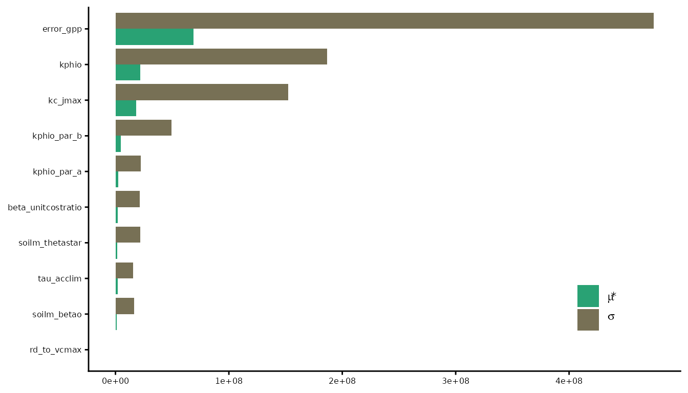
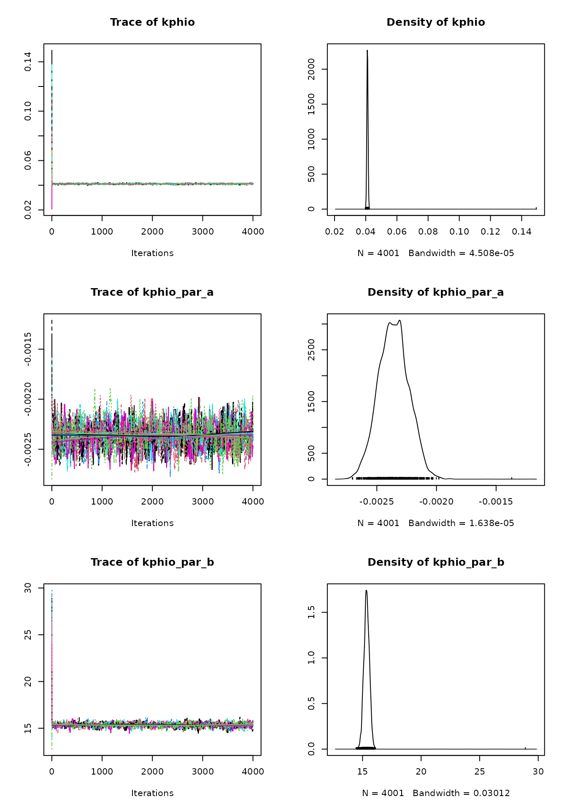
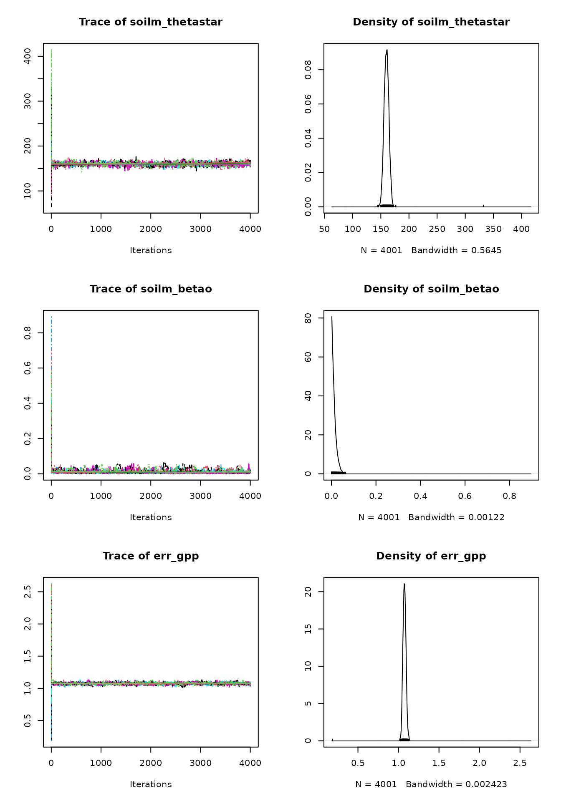
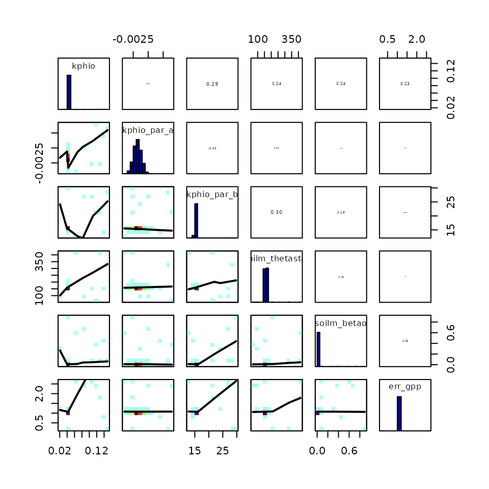

Sensitivity analysis and calibration interpretation
Josefa Arán
Source:vignettes/sensitivity_analysis.Rmd
sensitivity_analysis.RmdParameter calibration can have a big impact on our modeling effort
and use big computational resources. Hence, it is worth our time to
explore which parameters should actually be calibrated (the ones that
impact the simulations greatly) and to examine if the calibration
routines behave as expected. This vignette explains how to perform a
simple parameter sensitivity analysis for the P-model and how to
interpret the outputs of the calibration using the
BayesianTools package.
Morris sensitivity analysis
The Morris method for global sensitivity analysis allows to explore which parameters have the biggest influence on the model fit. In this example, we will quantify how different values of the calibratable model parameters lead to more variability in the match between GPP predicted by the P-model and GPP observations. It would be wise to repeat this exercise for various targets because they may be simulated by equations in the P-model that involve different model parameters.
If the P-model has very low sensitivity to a certain parameter, calibrating it will not improve the model substantially. But if it’s very sensitive to another parameter, calibrating this second parameter could improve the P-model fit greatly. We should spend our computational resources on calibrating the parameters to which the model is most sensitive.
First of all, let’s define a function which measures the agreement between GPP predictions from the P-model and GPP observations, for a set of values of the calibratable parameters. It computes the normal log-likelihood of the GPP predictions, given the observed GPP and its uncertainty. We want to see how sensitive this function is to changes in the parameter values.
# Define log-likelihood function
ll_pmodel <- function(
par_v # a named vector of all calibratable parameters including errors
){
rsofun::cost_likelihood_pmodel( # reuse likelihood cost function
par_v,
obs = rsofun::p_model_validation,
drivers = rsofun::p_model_drivers,
targets = "gpp"
)
}
# Compute log-likelihood for a given set of parameters
ll_pmodel( par_v = c(
kphio = 4.102119e-02,
kphio_par_a =-2.289344e-03,
kphio_par_b = 1.525094e+01,
soilm_thetastar = 1.577507e+02,
soilm_betao = 1.169702e-04,
beta_unitcostratio = 146.0,
rd_to_vcmax = 0.014,
tau_acclim = 20.0,
kc_jmax = 0.41,
error_gpp = 0.9 # value from previous simulations
))
#> [1] -2758.147Some parameters are constrained by their physical interpretation
(e.g. kphio > 0) and it’s also necessary to provide a
bounded parameter space for Morris’ method to sample the parameter
space. We define the parameter space by their lower and upper
bounds.
# best parameter values (initial values, taken from Stocker et al., 2020 GMD)
par_cal_best <- c(
kphio = 0.09423773,
kphio_par_a = -0.0025,
kphio_par_b = 20,
soilm_thetastar = 0.6*240,
soilm_betao = 0.2,
beta_unitcostratio = 146.0,
rd_to_vcmax = 0.014,
tau_acclim = 30.0,
kc_jmax = 0.41,
error_gpp = 1
)
# lower bound
par_cal_min <- c(
kphio = 0.03,
kphio_par_a = -0.004,
kphio_par_b = 10,
soilm_thetastar = 0,
soilm_betao = 0,
beta_unitcostratio = 50.0,
rd_to_vcmax = 0.01,
tau_acclim = 7.0,
kc_jmax = 0.2,
error_gpp = 0.01
)
# upper bound
par_cal_max <- c(
kphio = 0.15,
kphio_par_a = -0.001,
kphio_par_b = 30,
soilm_thetastar = 240,
soilm_betao = 1,
beta_unitcostratio = 200.0,
rd_to_vcmax = 0.1,
tau_acclim = 60.0,
kc_jmax = 0.8,
error_gpp = 4
)We use the morris() function from the
{sensitivity} package to perform the sensitivity analysis.
As a target function, we will use the posterior density (log-likelihood)
of the parameters given the GPP data which we obtain via the function
BayesianTools::createBayesianSetup(). Note that, because of
using a uniform prior, the posterior distribution is proportional to the
GPP log-likelihood (defined previously) wherever the parameter values
are feasible and zero outside of the parameter ranges.
morris_setup <- BayesianTools::createBayesianSetup(
likelihood = ll_pmodel,
prior = BayesianTools::createUniformPrior(par_cal_min, par_cal_max, par_cal_best),
names = names(par_cal_best)
)In the following chunk, we run the Morris sensitivity analysis, using
a grid with r=1000 values for each parameter and a
one-at-a-time design. Running the sensitivity analysis may take a few
minutes, even for this small example dataset, and is still
computationally cheaper than running the parameter calibration.
set.seed(432)
morrisOut <- sensitivity::morris(
model = morris_setup$posterior$density,
factors = names(par_cal_best),
r = 1000,
design = list(type = "oat", levels = 20, grid.jump = 3),
binf = par_cal_min,
bsup = par_cal_max,
scale = TRUE
)The analysis evaluates the variability of the target function, i.e. the log-likelihood, for several points across the parameter space. It is an approximation of the derivatives of the log-likelihood with respect to the model parameters. Statistics and can be interpreted as the mean absolute derivative and the standard deviation of the derivative, respectively. The higher the value of these statistics for a given parameter, the more influential the parameter is.
# Summarise the morris output
morrisOut.df <- data.frame(
parameter = names(par_cal_best),
mu.star = apply(abs(morrisOut$ee), 2, mean, na.rm = T),
sigma = apply(morrisOut$ee, 2, sd, na.rm = T)
) |>
arrange( mu.star )
morrisOut.df |>
tidyr::pivot_longer( -parameter, names_to = "variable", values_to = "value") |>
ggplot(aes(
reorder(parameter, value),
value,
fill = variable),
color = NA) +
geom_bar(position = position_dodge(), stat = 'identity') +
scale_fill_manual("",
labels = c('mu.star' = expression(mu * "*"),
'sigma' = expression(sigma)),
values = c('mu.star' = "#29a274ff",
'sigma' = "#777055ff")) +
theme_classic() +
theme(
axis.text = element_text(size = 6),
axis.title = element_blank(),
legend.position = c(0.9, 0.1), legend.justification = c(0.95, 0.05)
) +
coord_flip() # make horizontal
#> Warning: A numeric `legend.position` argument in `theme()` was deprecated in ggplot2
#> 3.5.0.
#> ℹ Please use the `legend.position.inside` argument of `theme()` instead.
#> This warning is displayed once every 8 hours.
#> Call `lifecycle::last_lifecycle_warnings()` to see where this warning was
#> generated.
The outcome of the Morris sensitivity analysis depends strongly on
the choice of parameter ranges and how parameters interact with each
other in the underlying model. In this example, we constrained the
parameters based on their physical meaning
(e.g. soilm_betao should be in [0,1]) and the
site FR-Pue where the data is coming from (e.g. kphio_par_b
around
25C).
When observing the figure above, we notice that parameters
kphio and kc_jmax have a high impact on the
model fit (big
),
but also the magnitude of this dependence of GPP on the two parameters
changes across the parameter space (big
).
This happens because parameters interact in the light use efficiency
calculation and the calibration may be harder and require data from
several sites.
The log-likelihood is most sensitive to err_gpp with a
very large variation in the magnitude of this dependence. This makes
sense because for higher values of the standard deviation the normal
likelihood is flatter (and similar log-likelihood values are calculated,
whether the model predictions using the rest of parameters are good or
bad) and for lower err_gpp values the likelihood is pointy
(hence good model fits achieve a big log-likelihood value and and poor
model fits, a very small value).
To help you interpret this sensitivity analysis and better understand
the parameter-model relationship, it may be wise to run it several times
for different parameter ranges and validation data. Note how
rd_to_vcmax does not affect GPP, but it would actually
affect dark respiration predictions, so trait data could also be added
for validation.
Interpretation of Bayesian calibration routine
It is always important to check the convergence of the MCMC algorithm used for the Bayesian calibration. Here we show some plots and statistics that may help you assess whether the parameter calibration has converged.
According to the previous sensitivity analysis, calibrating the error parameter for GPP and the quantum yield efficiency parameters will have a high impact on the model fit. Let’s run the calibration:
# Calibrates kphio, kphio_par_b, kc_jmax - top 3 model params
set.seed(2025)
# Define calibration settings
settings_calib <- list(
method = "BayesianTools",
metric = rsofun::cost_likelihood_pmodel,
control = list(
sampler = "DEzs",
settings = list(
burnin = 12000,
iterations = 24000,
nrChains = 3, # number of independent chains
startValue = 3 # number of internal chains to be sampled
)),
par = list(
kphio = list(lower = 0.02, upper = 0.15, init = 0.05),
kphio_par_a =list(lower = -0.004, upper = -0.001, init = -0.0025),
kphio_par_b = list(lower = 10, upper = 30, init = 20),
soilm_thetastar = list(
lower = 0.01 * rsofun::p_model_drivers$site_info[[1]]$whc,
upper = 1.0 * rsofun::p_model_drivers$site_info[[1]]$whc,
init = 0.6 * rsofun::p_model_drivers$site_info[[1]]$whc
),
soilm_betao = list(lower = 0.0, upper = 1.0, init = 0.0),
err_gpp = list(lower = 0.1, upper = 3, init = 0.8)
)
)
par_fixed <- list(
beta_unitcostratio = 146.0,
kc_jmax = 0.41,
rd_to_vcmax = 0.014,
tau_acclim = 20.0
)
# Calibrate kphio-related parameters and err_gpp
par_calib <- calib_sofun(
drivers = p_model_drivers,
obs = p_model_validation,
settings = settings_calib,
par_fixed = par_fixed,
targets = "gpp"
)
saveRDS(par_calib, "files/sensitivity_analysis.Rmd__par_calib.RDS", compress = "xz")
# This code takes 15 minutes to runBayesianTools makes it easy to produce the trace plot of
the MCMC chains and the posterior density plot for the parameters. Trace
plots show the time series of the sampled chains, which should reach a
stationary state. One can also choose a burnin visually, to discard the
early iterations and keep only the samples from the stationary
distribution to which they converge. We set above from previous runs,
and those iterations are not shown by the following trace plot. The
samples after the burnin period should be used for inference.
plot(par_calib$mod)
The posterior density plots may be lumpy. In this case it’s advisable
to run the MCMC algorithm for more iterations, in order to get a better
estimate of the parameters’ posterior distributions. A good posterior
should look more gaussian (although it can be skewed). A multimodal
density indicates that the MCMC is still exploring the parameter space
and hasn’t converged yet. The posteriors can be plotted against the
priors using BayesianTools::marginalPlot().
When convergence has been reached, the oscillation of the time series should look like white noise. It’s normal that consecutive MCMC samples are correlated because of the sampling algorithm’s nature, but the presence of a more general trend indicates that convergence hasn’t been reached.
Looking at the correlation between chains for different parameters is
also helpful because parameter correlation may slow down convergence, or
the chains may oscillate in the multivariate posterior space. In this
calibration we expect parameter samples to be somewhat correlated,
especially kphio_par_a and kphio_par_b because
they specify the shape of the temperature dependence of the quantum
yield efficiency,
.
We can also see that err_gpp is correlated with
kphio (to which the P-model is very sensitive), since the
error represents how good the model fits the observed GPP.
correlationPlot(par_calib$mod, thin = 1) # use all samples, no thinning
In addition to visualizations, it’s helpful to compute some convergence diagnostics, like the Gelman-Brooks-Rubin (GBR) potential scale factors. This diagnostic compares the variance within chains to that across chains and should progressively get closer to 1. It is common in the literature (Gelman, A., Carlin, J.B., Stern, H.S., Rubin, D.B.: Bayesian Data Analysis, 2nd edn. Chapman & Hall, London (2004)) to accept convergence with a GBR between 1.05 and 1.1.
gelmanDiagnostics(par_calib$mod)
#> Potential scale reduction factors:
#>
#> Point est. Upper C.I.
#> kphio 1.01 1.02
#> kphio_par_a 1.01 1.01
#> kphio_par_b 1.00 1.01
#> soilm_thetastar 1.02 1.04
#> soilm_betao 1.02 1.04
#> err_gpp 1.02 1.03
#>
#> Multivariate psrf
#>
#> 1.03Finally, the parameter MAP estimates can be derived from the chains
(that converged) after removing the burnin period. They can be seen,
next to other statistics, using the summary function from
the BayesianTools library.
summary(par_calib$mod)
#> # # # # # # # # # # # # # # # # # # # # # # # # #
#> ## MCMC chain summary ##
#> # # # # # # # # # # # # # # # # # # # # # # # # #
#>
#> # MCMC sampler: DEzs
#> # Nr. Chains: 9
#> # Iterations per chain: 4001
#> # Rejection rate: 0.849
#> # Effective sample size: 3377
#> # Runtime: 1301.851 sec.
#>
#> # Parameters
#> psf MAP 2.5% median 97.5%
#> kphio 1.010 0.041 0.040 0.041 0.042
#> kphio_par_a 1.006 -0.002 -0.003 -0.002 -0.002
#> kphio_par_b 1.004 15.251 14.888 15.350 15.803
#> soilm_thetastar 1.021 157.751 151.926 160.060 168.101
#> soilm_betao 1.021 0.000 0.000 0.008 0.038
#> err_gpp 1.016 1.074 1.040 1.074 1.111
#>
#> ## DIC: 5561.961
#> ## Convergence
#> Gelman Rubin multivariate psrf: 1.034
#>
#> ## Correlations
#> kphio kphio_par_a kphio_par_b soilm_thetastar soilm_betao
#> kphio 1.000 -0.097 0.287 0.236 0.236
#> kphio_par_a -0.097 1.000 -0.201 0.116 0.000
#> kphio_par_b 0.287 -0.201 1.000 0.301 0.189
#> soilm_thetastar 0.236 0.116 0.301 1.000 0.128
#> soilm_betao 0.236 0.000 0.189 0.128 1.000
#> err_gpp 0.229 -0.002 0.098 0.042 0.147
#> err_gpp
#> kphio 0.229
#> kphio_par_a -0.002
#> kphio_par_b 0.098
#> soilm_thetastar 0.042
#> soilm_betao 0.147
#> err_gpp 1.000More details on diagnosing MCMC convergence can be found in this vignette from BayesianTools and this blogpost.
Plotting P-model output after calibration
After we have run and checked the calibration, let’s see how the model performs.
To compute the credible intervals for GPP prediction, we ran the P-model for 600 samples from the posterior distribution of the calibrated parameters. As a result, we obtain the posterior distribution of modeled GPP at each time step and also the posterior distribution of predicted GPP, which incorporates the Gaussian model error.
# Evaluation of the uncertainty coming from the model parameters' uncertainty
# Sample parameter values from the posterior distribution
samples_par <- getSample(
par_calib$mod,
thin = 60
) |>
as.data.frame() |>
dplyr::mutate(mcmc_id = 1:n()) |>
tidyr::nest(.by = mcmc_id, .key = "pars")
run_pmodel <- function(par){
# Function that runs the P-model for a sample of parameters
# and also adds the new observation error
out <- runread_pmodel_f(
drivers = p_model_drivers,
par = list(
kphio = par$kphio,
kphio_par_a = par$kphio_par_a,
kphio_par_b = par$kphio_par_b,
soilm_thetastar = par$soilm_thetastar,
soilm_betao = par$soilm_betao,
beta_unitcostratio = 146.0,
rd_to_vcmax = 0.014,
tau_acclim = 20.0,
kc_jmax = 0.41
)
)
# return modelled GPP and prediction for a new GPP observation
gpp <- out$data[[1]][, "gpp"]
out <- data.frame(
gpp = gpp,
gpp_pred = rnorm(
n = length(gpp),
mean = gpp,
sd = par$err_gpp
),
date = out$data[[1]][, "date"])
return(out)
}
set.seed(2025)
# Run the P-model for each set of parameters
pmodel_runs <- samples_par |>
dplyr::mutate(sim = purrr::map(pars, ~run_pmodel(.x))) |>
# format to obtain 90% credible intervals
dplyr::select(mcmc_id, sim) |>
tidyr::unnest(sim) |>
dplyr::group_by(date) |>
# compute quantiles for each day
dplyr::summarise(
gpp_q05 = quantile(gpp, 0.05, na.rm = TRUE),
gpp_q50 = quantile(gpp, 0.5, na.rm = TRUE), # get median
gpp_q95 = quantile(gpp, 0.95, na.rm = TRUE),
gpp_pred_q05 = quantile(gpp_pred, 0.05, na.rm = TRUE),
gpp_pred_q95 = quantile(gpp_pred, 0.95, na.rm = TRUE)
)
# run model with maximum a posteriori parameter estimates
pmodel_run_map <- run_pmodel(
MAP(par_calib$mod)$parametersMAP |>
t() |>
as_tibble()
)Below we plot the first year of observed GPP (in black) against the predicted GPP (in grey), computed as the median of the posterior distribution of modeled GPP. This information is accompanied by the 90% credible interval for predicted GPP (shaded in blue, very narrow) and the 90% predictive interval (shaded in grey). We can see that the parameter uncertainty captured in the credible interval is quite small, in comparison to the model uncertainty captured by the predictive interval.
## add transparency to color given as a name
add_alpha <- function( col, alpha ){
col <- col2rgb( col, alpha = TRUE )/255
col[4] <- alpha
col <- rgb(col[1,],col[2,],col[3,],col[4,])
return( col )
}
# Plot the credible intervals computed above
# for the first year only
data_to_plot <- pmodel_runs |>
# Plot only first year
dplyr::slice(1:365) |>
dplyr::left_join(
# Merge GPP validation data (first year)
p_model_validation$data[[1]][1:365, ] |>
dplyr::rename(gpp_obs = gpp),
by = "date")
plot_gpp_error <- ggplot(data = data_to_plot) +
geom_ribbon(
aes(
ymin = gpp_pred_q05,
ymax = gpp_pred_q95,
x = date,
fill = "Model uncertainty"
)) +
geom_ribbon(
aes(
ymin = gpp_q05,
ymax = gpp_q95,
x = date,
fill = "Parameter uncertainty"
)) +
# Include observations in the plot
geom_point(
aes(
x = date,
y = gpp_obs,
color = "Observations"
),
) +
geom_line(
aes(
x = date,
y = gpp_q50,
color = "Predictions"
)
) +
theme_classic() +
theme(panel.grid.major.y = element_line(),
legend.position = "bottom") +
labs(
x = 'Date',
y = expression(paste("GPP (g C m"^-2, "s"^-1, ")"))
) +
scale_color_manual(NULL,
breaks = c("Observations",
"Predictions"),
values = c("black", "tomato")) +
scale_fill_manual(NULL,
breaks = c("Model uncertainty",
"Parameter uncertainty"),
values = c(add_alpha("tomato", 0.5),
"#1b9e77", 0))
plot_gpp_error
#> Warning: Removed 42 rows containing missing values or values outside the scale range
#> (`geom_point()`).